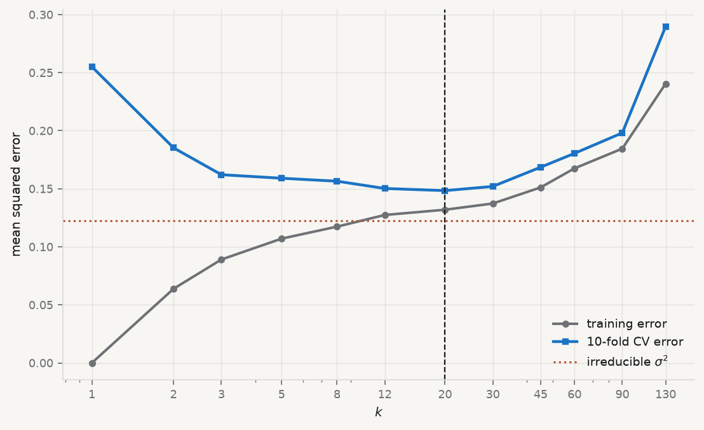

Every method so far has assumed a form. Least squares assumes a line, logistic regression assumes a curve, and the penalties in chapter 5 assume the line is worth shrinking toward. Each assumption is a claim that can be wrong, and chapter 3 was about detecting when it is.
Nearest neighbours makes no such claim. To predict for a new observation, find the \(k\) observations in the training data closest to it, and average their outcomes:
where \(N_k(x_0)\) is the set of the \(k\) nearest training points. For a classification problem, take the majority vote instead. There is no fitting stage, no coefficient, no optimisation — the training data is the model.
This looks like getting something for nothing, and the chapter is about what it actually costs. The method is not assumption-free; it has simply moved its assumption. Averaging the neighbours presumes that the function is smooth enough that points close in \(x\) have similar \(y\), and it presumes you know what “close” means. Both presumptions can fail badly, and neither shows up as a diagnostic plot.
No portrait accompanies this chapter. The method is due to Evelyn Fix and Joseph Hodges, in a 1951 technical report for the US Air Force School of Aviation Medicine that went unpublished for nearly forty years (Fix and Hodges 1989), and no freely licensed likeness of either author appears to exist. The convention this book follows is a real portrait or none.
8.2 The floor nobody beats
Before asking how well a classifier does, ask how well anything could.
Bayes classifier — the rule that assigns each \(x\) to the most probable class given \(x\): predict class \(j\) where \(\Pr(Y = j \mid X = x)\) is largest. Its error rate, the Bayes rate, is the lowest achievable by any classifier whatsoever.
The proof is a one-liner: at each \(x\), any rule either picks the most probable class or does not, and picking it minimises the chance of being wrong there. Integrating over \(x\) gives the result.
The Bayes classifier is not a method, because computing it requires \(\Pr(Y \mid X)\) — which is the thing you are trying to estimate. Its value is conceptual and it is considerable. A non-zero Bayes rate means that error is not evidence of a bad model. If the outcome is genuinely uncertain given the predictors, no amount of flexibility, data or cleverness removes the remaining error, and a practitioner who keeps adding complexity to chase it is chasing noise.
The regression analogue is the irreducible error \(\sigma^2\): the variance of \(y\) around \(f(x)\), which no estimator of \(f\) can touch. It appears explicitly in the decomposition below.
8.3 Where prediction error comes from
Take a target \(y = f(x) + \varepsilon\) with \(\operatorname{E}[\varepsilon] = 0\) and \(\operatorname{Var}(\varepsilon) = \sigma^2\). Let \(\hat f\) be an estimate built from a random training sample. The expected squared error at a point \(x_0\), averaged over training samples and over the noise in a new observation, splits into three:
Chapter 5 used the last two terms to argue for a biased estimator. Here all three matter, and the first is the one that makes the others meaningful: because \(\sigma^2 > 0\), the total error has a floor, and the only quantity a modeller controls is how the remaining budget is split between bias and variance.
The words are worth being precise about. Bias is how far the method’s average prediction is from the truth — an error it makes systematically, in every sample. Variance is how much the prediction moves when the training sample changes — an error it makes differently each time. A rigid method has high bias and low variance; a flexible one has the reverse.
For nearest neighbours, \(k\) is the dial. Small \(k\) averages few points, follows the data closely, and changes a lot when the data change: low bias, high variance. Large \(k\) averages many points, smooths across regions where the truth differs, and barely moves between samples: high bias, low variance.
The decomposition is usually presented as algebra and left there. It is measurable, if you are willing to simulate a world whose truth you know.
Figure 8.1: The decomposition, measured. Four hundred training samples are drawn from a known function; for each \(k\) the squared bias and the variance of the prediction are computed across samples. Their sum plus the irreducible error tracks the test error to within 0.002 everywhere.
Read the table rather than the shape. Variance falls by a factor of sixteen between \(k = 1\) and \(k = 80\); squared bias rises by a factor of several hundred. The sum is U-shaped with a minimum in between, and the identity holds — the sum of the three estimated components matches the independently measured test error at every \(k\). That is the decomposition being verified, not illustrated.
Note also what happens at the extremes. At \(k = 1\) the method has essentially no bias and all the error is variance plus noise. At \(k = 80\), two thirds of the sample is averaged into every prediction and the bias dominates. Neither extreme is a modelling failure; both are the same dial at different settings.
Effective degrees of freedom — for \(k\)-nearest neighbours, roughly \(n/k\). At \(k = 1\) the method has as many effective parameters as observations, which is why it interpolates the training data exactly; at \(k = n\) it has one, and predicts the global mean everywhere. It is the same quantity chapter 5’s penalty controlled continuously.
8.4 Distance is not given, it is chosen
Nearest neighbours needs a definition of “near”. The default is Euclidean distance,
and that formula adds squared differences measured in different units. A difference of one euro and a difference of one index point are treated as identical quantities. In practice the variable with the largest numerical range determines the neighbours entirely, and every other predictor is decoration.
This is the third time this book has reached the same conclusion — PCA in chapter 7, the penalties in chapter 5, and now here — and the reason is always the same: any method that compares magnitudes across variables must first make them comparable. Standardise before computing a distance. The alternative is a method whose answer depends on whether you recorded revenue in dollars or millions of dollars.
8.5 The curse of dimensionality
The deeper problem is that “near” stops existing as the number of predictors grows, and it does so much faster than intuition suggests.
The last column is what matters: the gap between the nearest and the farthest point, relative to the nearest. In one dimension the farthest point is around a thousand times further away than the nearest. By fifty dimensions it is half again as far; by five hundred, a fifth. All the points are approximately the same distance from the query, so “the ten nearest” is close to a random selection of ten (Beyer et al. 1999).
There is a second, geometric way to see the same thing. To capture a fixed fraction \(r\) of the data in a hypercube of \(p\) dimensions, the neighbourhood must span \(r^{1/p}\) of the range of each variable. Capturing 1% of the data needs 10% of the range in two dimensions, 63% in ten, and 95% in a hundred — a “neighbourhood” covering almost the entire space, which is not local in any useful sense.
The consequence for practice is blunt. Nearest neighbours works well with few predictors and abundant data, and degrades quickly as predictors are added. Adding a variable to a linear model costs one parameter; adding one to a nearest neighbour method costs a dimension of the space in which distance must remain meaningful.
8.6 Choosing \(k\), and why training error lies
The training error of \(1\)-nearest-neighbour is exactly zero: every training point is its own nearest neighbour, so it predicts itself perfectly. That number is not a measure of anything, and any procedure that selects \(k\) by fitting error will select \(k = 1\) every time.
Cross-validation is the answer, as it was in chapter 5. Split, fit on the rest, measure on the held-out part, rotate.
Show the code
from sklearn.model_selection import cross_val_score, KFoldxs = rng.uniform(0, 1, 200).reshape(-1, 1)ys = truth_fn(xs.ravel()) + rng.normal(0, SIGMA, 200)grid = [1, 2, 3, 5, 8, 12, 20, 30, 45, 60, 90, 130]train_err, cv_err = [], []for k in grid: m = KNeighborsRegressor(n_neighbors=k).fit(xs, ys) train_err.append(np.mean((ys - m.predict(xs)) **2)) cv_err.append(-cross_val_score(KNeighborsRegressor(n_neighbors=k), xs, ys, cv=KFold(10, shuffle=True, random_state=0), scoring="neg_mean_squared_error").mean())fig, ax = plt.subplots(figsize=(7.0, 4.3))ax.plot(grid, train_err, marker="o", ms=4, lw=1.8, color=CL.muted, label="training error")ax.plot(grid, cv_err, marker="s", ms=4, lw=2.0, color=CL.accent, label="10-fold CV error")ax.axhline(SIGMA **2, ls=":", lw=1.4, color=CL.warn, label=r"irreducible $\sigma^2$")ax.axvline(grid[int(np.argmin(cv_err))], color=CL.ink, lw=1, ls="--")ax.set_xlabel("$k$"); ax.set_ylabel("mean squared error")ax.set_xscale("log"); ax.set_xticks(grid); ax.set_xticklabels(grid)ax.legend(frameon=False, fontsize=8.5)fig.tight_layout()print(f"training error at k=1: {train_err[0]:.6f} (exactly zero — every point is its own neighbour)")print(f"CV chooses k = {grid[int(np.argmin(cv_err))]}, CV error {min(cv_err):.4f}")print(f"irreducible floor σ² = {SIGMA**2:.4f}")
training error at k=1: 0.000000 (exactly zero — every point is its own neighbour)
CV chooses k = 20, CV error 0.1484
irreducible floor σ² = 0.1225

Figure 8.2: Training error against cross-validated error for the same data. Training error rises monotonically with \(k\) and is zero at \(k=1\); only the cross-validated curve has a minimum, and it is not at \(k=1\).
Two things are visible. The training curve is monotone and useless for selection. And the cross-validated minimum sits close to, but above, the irreducible floor — which is what a well-tuned method looks like. A cross-validated error below\(\sigma^2\) would indicate a leak between the folds rather than a triumph.
8.7 Did the flexibility earn its keep?
Now the real question, on real data. Nearest neighbours is flexible; flexibility costs variance; and the only justification for paying is that the truth is non-linear in a way a linear model misses. Whether that holds is an empirical question, and it is answered by comparison rather than by assertion.
Run it: kNN against a baseline and against logistic regression
n = 385 base rate = 0.101 majority-class accuracy = 0.8987
model accuracy ROC AUC
kNN, k=5, standardised 0.8909 0.5147
kNN, k=25, standardised 0.8987 0.5609
logistic regression 0.8987 0.6754
The result is unflattering to the method this chapter is about, and it is the most useful output in it.
On accuracy, nothing beats predicting the majority class. All three models score about 0.899, which is exactly what you get by declaring that no country falls behind, ever. Chapter 4 warned about this: with a base rate of 10%, accuracy is a measure of the base rate rather than of the model.
On AUC, the models separate completely. Nearest neighbours at \(k=5\) scores 0.51 — a coin flip, no information whatsoever. At \(k=25\) it recovers to 0.56. Logistic regression, the rigid method with the strong assumption, reaches 0.68.
So the flexibility did not earn its keep. There is signal in these predictors, a linear model finds it, and the flexible method spends its budget on variance and comes back with almost nothing. Had the comparison been made on accuracy alone, all three would have looked identical and the conclusion would have been that nothing works — which is false, and would have been the wrong lesson.
8.8 What nearest neighbours cannot do
It cannot explain. There are no coefficients, so there is nothing to interpret, no marginal effect, no test of a hypothesis about a mechanism. It is a prediction machine, and chapter 1’s distinction applies with full force.
It cannot extrapolate. A query outside the range of the training data is answered by whichever training points happen to be least far away, which will be the boundary points, no matter how far outside you go. The prediction is confidently wrong and nothing signals it.
It is slow where it matters. Fitting is free and predicting is expensive: the entire training set must be searched for every query. That is the opposite of the profile you usually want in production.
It is exposed to irrelevant variables. Adding a predictor that carries no information does not merely fail to help — it actively corrupts the distances, diluting the informative dimensions. Chapter 5’s penalties can shrink a useless variable to zero; a distance cannot.
8.9 A short review of the literature
The method originates in an unpublished 1951 technical report by Fix and Hodges (1989), whose belated reprinting in 1989 is the citable version. Cover and Hart (1967) proved the result that made it respectable: as the sample grows, the error rate of the 1-nearest-neighbour rule is bounded above by twice the Bayes rate — so the simplest possible classifier, using one point, is asymptotically within a factor of two of the best any method can do. Stone (1977) established the conditions under which nearest-neighbour regression is consistent, completing the theoretical case.
The trade-off itself is stated in its modern form by Geman, Bienenstock, and Doursat (1992), who framed it as a dilemma rather than a choice: any method flexible enough to fit an arbitrary function is flexible enough to fit the noise, and the resolution has to come from outside the data, as a restriction, a penalty, or a tuning parameter chosen by resampling.
Beyer et al. (1999) is the reference for the failure in high dimensions, showing that under broad conditions the distance to the nearest neighbour approaches the distance to the farthest as dimension grows — so the query on which the whole method depends becomes meaningless, not merely imprecise.
8.10 What to report
The baseline first. Majority-class accuracy, or the mean for regression. Every subsequent number is read against it.
A metric the base rate does not dominate. AUC, balanced accuracy or a proper scoring rule. Accuracy on a 10% outcome tells you the outcome is 10%.
How \(k\) was chosen, with the cross-validation curve, and the training curve alongside it if you want to make the point that it is uninformative.
That the predictors were standardised, and how many there are. With more than a handful, say what you did about the dimensionality.
The comparison against a rigid model. Flexibility is a purchase, and the report should say what it bought. If a linear model does as well or better, that is the finding.
What the method cannot support. No interpretation, no extrapolation, and no claim about mechanism — only about prediction, within the range of the training data.
Beyer, Kevin, Jonathan Goldstein, Raghu Ramakrishnan, and Uri Shaft. 1999. “WhenIs‘NearestNeighbor’Meaningful?” In LectureNotes in ComputerScience, 217–35. SpringerBerlinHeidelberg. https://doi.org/10.1007/3-540-49257-7_15.
Cover, T., and P. Hart. 1967. “Nearest Neighbor Pattern Classification.”IEEETransactions on InformationTheory 13 (1): 21–27. https://doi.org/10.1109/TIT.1967.1053964.
Fix, Evelyn, and J. L. Hodges. 1989. “DiscriminatoryAnalysis. NonparametricDiscrimination: ConsistencyProperties.”InternationalStatisticalReview / RevueInternationale de Statistique 57 (3): 238. https://doi.org/10.2307/1403797.
Geman, Stuart, Elie Bienenstock, and René Doursat. 1992. “NeuralNetworks and the Bias/VarianceDilemma.”NeuralComputation 4 (1): 1–58. https://doi.org/10.1162/neco.1992.4.1.1.